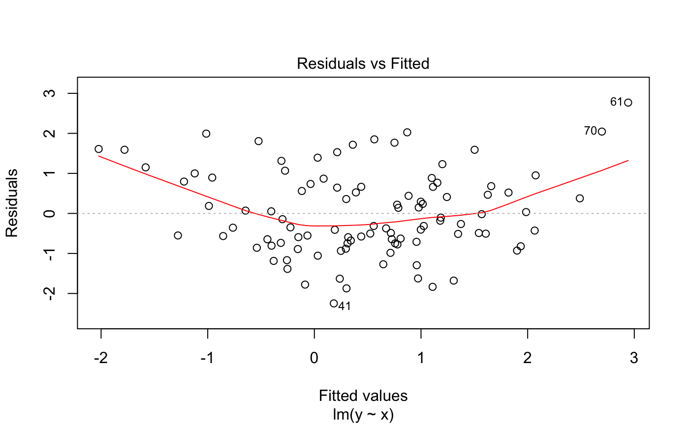
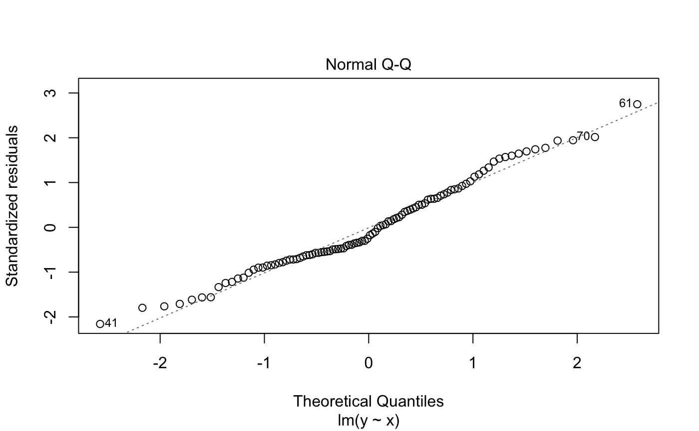

Introduction
For example, you can make enlarge-able plots:
Graphical relationship
library(rmdpartials) library(ggplot2) x <- rnorm(100) y <- x + rnorm(100) + 0.5 * x^2 curve <- qplot(x, y) enlarge_plot(curve, large_plot = curve + theme_classic(base_size = 20), plot_name = "myplot")
Regression
reg <- lm(y ~ x) regression_diagnostics(reg)
| x | |
|---|---|
| (Intercept) | 0.3592409 |
| x | 1.0755503 |
Values vs. fitted values.

Diagnostics (click to show)


Debug
Learn about environments in partials.
## Warning in readLines(input): incomplete final line found on '/private/var/
## folders/tr/lgwjmdgd72bckr1hj5gd_7640000gq/T/Rtmp9er7z0/temp_libpatha85851d7ce39/
## rmdpartials/_debug.Rmd'Debug
Working directory
## [1] "/Users/rubenarslan/research/rmdpartials/vignettes"Knitr Output.dir
## [1] "/Users/rubenarslan/research/rmdpartials/vignettes"Child mode
## [1] TRUEViewer null
## [1] TRUEin temp dir
## [1] FALSEobjects in this environment
## character(0)opts_knit
## $progress
## [1] FALSE
##
## $verbose
## [1] FALSE
##
## $eval.after
## [1] "fig.cap"
##
## $base.dir
## NULL
##
## $base.url
## NULL
##
## $root.dir
## NULL
##
## $child.path
## [1] ""
##
## $upload.fun
## function (x)
## x
## <bytecode: 0x7feee8cfacd8>
## <environment: namespace:base>
##
## $global.device
## [1] FALSE
##
## $global.par
## [1] FALSE
##
## $concordance
## [1] FALSE
##
## $documentation
## [1] 1
##
## $self.contained
## [1] TRUE
##
## $unnamed.chunk.label
## [1] "rmdpartial"
##
## $highr.opts
## NULL
##
## $out.format
## [1] "markdown"
##
## $child
## [1] TRUE
##
## $parent
## [1] FALSE
##
## $tangle
## [1] FALSE
##
## $aliases
## NULL
##
## $header
## highlight tikz framed
## "" "" ""
##
## $global.pars
## NULL
##
## $output.dir
## [1] "/Users/rubenarslan/research/rmdpartials/vignettes"
##
## $rmarkdown.pandoc.from
## [1] "markdown+autolink_bare_uris+tex_math_single_backslash+smart"
##
## $rmarkdown.pandoc.to
## [1] "html"
##
## $rmarkdown.pandoc.args
## [1] "--email-obfuscation"
## [2] "none"
## [3] "--standalone"
## [4] "--section-divs"
## [5] "--table-of-contents"
## [6] "--toc-depth"
## [7] "2"
## [8] "--template"
## [9] "/var/folders/tr/lgwjmdgd72bckr1hj5gd_7640000gq/T//Rtmpvl789D/filea9254b4e9af1.html"
## [10] "--highlight-style"
## [11] "pygments"
##
## $rmarkdown.pandoc.id_prefix
## [1] ""
##
## $rmarkdown.keep_md
## [1] FALSE
##
## $rmarkdown.df_print
## [1] "default"
##
## $rmarkdown.version
## [1] 2
##
## $rmarkdown.runtime
## [1] "static"opts_chunk
## $eval
## [1] TRUE
##
## $echo
## [1] FALSE
##
## $results
## [1] "markup"
##
## $tidy
## [1] FALSE
##
## $tidy.opts
## NULL
##
## $collapse
## [1] FALSE
##
## $prompt
## [1] FALSE
##
## $comment
## [1] "##"
##
## $highlight
## [1] TRUE
##
## $strip.white
## [1] TRUE
##
## $size
## [1] "normalsize"
##
## $background
## [1] "#F7F7F7"
##
## $cache
## [1] FALSE
##
## $cache.path
## [1] "rmdpartials_cache/html/942083989f_"
##
## $cache.vars
## NULL
##
## $cache.lazy
## [1] TRUE
##
## $dependson
## NULL
##
## $autodep
## [1] FALSE
##
## $cache.rebuild
## [1] FALSE
##
## $fig.keep
## [1] "high"
##
## $fig.show
## [1] "asis"
##
## $fig.align
## [1] "default"
##
## $fig.path
## [1] "/Users/rubenarslan/research/rmdpartials/docs/articles/rmdpartials_files/figure-html/942083989f_"
##
## $dev
## [1] "png"
##
## $dev.args
## list()
##
## $dpi
## [1] 96
##
## $fig.ext
## [1] "png"
##
## $fig.width
## [1] 7.291667
##
## $fig.height
## [1] 4.506593
##
## $fig.env
## [1] "figure"
##
## $fig.cap
## NULL
##
## $fig.scap
## NULL
##
## $fig.lp
## [1] "fig:"
##
## $fig.subcap
## NULL
##
## $fig.pos
## [1] ""
##
## $out.width
## NULL
##
## $out.height
## NULL
##
## $out.extra
## NULL
##
## $fig.retina
## [1] 2
##
## $external
## [1] TRUE
##
## $sanitize
## [1] FALSE
##
## $interval
## [1] 1
##
## $aniopts
## [1] "controls,loop"
##
## $warning
## [1] TRUE
##
## $error
## [1] FALSE
##
## $message
## [1] TRUE
##
## $render
## NULL
##
## $ref.label
## NULL
##
## $child
## NULL
##
## $engine
## [1] "R"
##
## $split
## [1] FALSE
##
## $include
## [1] TRUE
##
## $purl
## [1] TRUESys.getenv()
## __CF_USER_TEXT_ENCODING
## 0x1F7:0x0:0x2
## __KMP_REGISTERED_LIB_41632
## 0x1041fb8e8-cafec7ce-libomp.dylib
## __KMP_REGISTERED_LIB_43096
## 0x10ca848e8-cafe1ab1-libomp.dylib
## __KMP_REGISTERED_LIB_43301
## 0x107aac8e8-cafe8d43-libomp.dylib
## __KMP_REGISTERED_LIB_43355
## 0x106bec8e8-cafeacb5-libomp.dylib
## _R_CHECK_LENGTH_1_LOGIC2_
## TRUE
## Apple_PubSub_Socket_Render
## /private/tmp/com.apple.launchd.xNvXLRg8st/Render
## BIBINPUTS ::/Users/rubenarslan/research/rmdpartials/vignettes:/Library/Frameworks/R.framework/Resources/share/texmf/tex/latex
## BSTINPUTS :/Users/rubenarslan/research/rmdpartials/vignettes:/Library/Frameworks/R.framework/Resources/share/texmf/bibtex/bst
## CLICOLOR_FORCE 1
## CYGWIN nodosfilewarning
## DISPLAY /private/tmp/com.apple.launchd.PnIouNsQmo/org.macosforge.xquartz:0
## DYLD_FALLBACK_LIBRARY_PATH
## /Library/Frameworks/R.framework/Resources/lib:/Library/Java/JavaVirtualMachines/jdk-11.0.1.jdk/Contents/Home/lib/server
## EDITOR vi
## GIT_ASKPASS rpostback-askpass
## HOME /Users/rubenarslan
## IN_PKGDOWN true
## LANG en_US.UTF-8
## LC_CTYPE en_US.UTF-8
## LN_S ln -s
## LOGNAME rubenarslan
## MAKE make
## MPLENGINE tkAgg
## PAGER /usr/bin/less
## PATH /usr/bin:/bin:/usr/sbin:/sbin:/usr/local/bin:/Library/TeX/texbin:/usr/local/MacGPG2/bin:/opt/puppetlabs/bin:/usr/local/munki:/opt/X11/bin:/usr/local/git/bin
## PROCESSX_PS4VFAQRK015_1587313954
## YES
## PROCESSX_PSKPKPAFYX2J_1587313944
## YES
## PWD /Users/rubenarslan/research/rmdpartials
## R_ARCH
## R_BROWSER false
## R_BZIPCMD /usr/bin/bzip2
## R_DOC_DIR /Library/Frameworks/R.framework/Resources/doc
## R_GZIPCMD /usr/bin/gzip
## R_HOME /Library/Frameworks/R.framework/Resources
## R_INCLUDE_DIR /Library/Frameworks/R.framework/Resources/include
## R_LIBS_SITE
## R_LIBS_USER ~/Library/R/3.5/library
## R_PACKRAT_DEFAULT_LIBPATHS
## /Library/Frameworks/R.framework/Versions/3.5/Resources/library
## R_PACKRAT_SITE_LIBRARY
##
## R_PACKRAT_SYSTEM_LIBRARY
## /Library/Frameworks/R.framework/Resources/library
## R_PAPERSIZE a4
## R_PAPERSIZE_USER a4
## R_PDFVIEWER false
## R_PLATFORM x86_64-apple-darwin15.6.0
## R_PRINTCMD lpr
## R_QPDF /Library/Frameworks/R.framework/Resources/bin/qpdf
## R_RD4PDF times,inconsolata,hyper
## R_SESSION_TMPDIR /var/folders/tr/lgwjmdgd72bckr1hj5gd_7640000gq/T//Rtmp9xx6RF
## R_SHARE_DIR /Library/Frameworks/R.framework/Resources/share
## R_SYSTEM_ABI osx,gcc,gxx,gfortran,?
## R_TESTS
## R_TEXI2DVICMD /usr/local/bin/texi2dvi
## R_UNZIPCMD /usr/bin/unzip
## R_ZIPCMD /usr/bin/zip
## RMARKDOWN_MATHJAX_PATH
## /Applications/RStudio.app/Contents/Resources/resources/mathjax-26
## RS_PPM_FD_READ 4
## RS_PPM_FD_WRITE 30
## RS_RPOSTBACK_PATH /Applications/RStudio.app/Contents/MacOS/rpostback
## RS_SHARED_SECRET 159612311118228919001342455198
## RSTUDIO 1
## RSTUDIO_CONSOLE_COLOR 256
## RSTUDIO_CONSOLE_WIDTH 142
## RSTUDIO_PANDOC /Applications/RStudio.app/Contents/MacOS/pandoc
## RSTUDIO_SESSION_PORT 13971
## RSTUDIO_USER_IDENTITY rubenarslan
## RSTUDIO_WINUTILS bin/winutils
## SED /usr/bin/sed
## SHELL /bin/bash
## SHLVL 0
## SSH_ASKPASS rpostback-askpass
## SSH_AUTH_SOCK /private/tmp/com.apple.launchd.waieW1S4mW/Listeners
## TAR /usr/bin/tar
## TERM xterm-256color
## TEXINPUTS :/Users/rubenarslan/research/rmdpartials/vignettes:/Library/Frameworks/R.framework/Resources/share/texmf/tex/latex
## TMPDIR /var/folders/tr/lgwjmdgd72bckr1hj5gd_7640000gq/T/
## USER rubenarslan
## XPC_FLAGS 0x0
## XPC_SERVICE_NAME 0options()
## $add.smooth
## [1] TRUE
##
## $bitmapType
## [1] "quartz"
##
## $browser
## [1] "false"
##
## $browserNLdisabled
## [1] FALSE
##
## $callr.condition_handler_cli_message
## function (msg)
## {
## custom_handler <- getOption("cli.default_handler")
## if (is.function(custom_handler)) {
## custom_handler(msg)
## }
## else {
## cli_server_default(msg)
## }
## }
## <bytecode: 0x7feeea9491d8>
## <environment: namespace:cli>
##
## $CBoundsCheck
## [1] FALSE
##
## $check.bounds
## [1] FALSE
##
## $citation.bibtex.max
## [1] 1
##
## $continue
## [1] "+ "
##
## $contrasts
## unordered ordered
## "contr.treatment" "contr.poly"
##
## $defaultPackages
## [1] "datasets" "utils" "grDevices" "graphics" "stats" "methods"
##
## $demo.ask
## [1] "default"
##
## $deparse.cutoff
## [1] 60
##
## $device
## function (width = 7, height = 7, ...)
## {
## grDevices::pdf(NULL, width, height, ...)
## }
## <bytecode: 0x7feee91c7a08>
## <environment: namespace:knitr>
##
## $device.ask.default
## [1] FALSE
##
## $digits
## [1] 7
##
## $dplyr.show_progress
## [1] TRUE
##
## $dvipscmd
## [1] "dvips"
##
## $echo
## [1] FALSE
##
## $editor
## [1] "vi"
##
## $encoding
## [1] "native.enc"
##
## $error
## (function ()
## invokeRestart("abort"))()
##
## $example.ask
## [1] "default"
##
## $expressions
## [1] 5000
##
## $fansi.css
## [1] "PRE.fansi SPAN {padding-top: .25em; padding-bottom: .25em};"
##
## $fansi.ctrl
## [1] "all"
##
## $fansi.tab.stops
## [1] 8
##
## $fansi.tabs.as.spaces
## [1] FALSE
##
## $fansi.term.cap
## [1] "bright" "256"
##
## $fansi.warn
## [1] TRUE
##
## $help.search.types
## [1] "vignette" "demo" "help"
##
## $help.try.all.packages
## [1] FALSE
##
## $HTTPUserAgent
## [1] "R (3.5.3 x86_64-apple-darwin15.6.0 x86_64 darwin15.6.0)"
##
## $install.packages.compile.from.source
## [1] "interactive"
##
## $internet.info
## [1] 2
##
## $keep.source
## [1] FALSE
##
## $keep.source.pkgs
## [1] FALSE
##
## $knitr.duplicate.label
## [1] "allow"
##
## $knitr.in.progress
## [1] TRUE
##
## $locatorBell
## [1] TRUE
##
## $mailer
## [1] "mailto"
##
## $matprod
## [1] "default"
##
## $max.print
## [1] 99999
##
## $menu.graphics
## [1] TRUE
##
## $na.action
## [1] "na.omit"
##
## $nwarnings
## [1] 50
##
## $OutDec
## [1] "."
##
## $pager
## [1] "/Library/Frameworks/R.framework/Resources/bin/pager"
##
## $papersize
## [1] "a4"
##
## $PCRE_limit_recursion
## [1] NA
##
## $PCRE_study
## [1] 10
##
## $PCRE_use_JIT
## [1] TRUE
##
## $pdfviewer
## [1] "false"
##
## $pkgType
## [1] "both"
##
## $printcmd
## [1] "lpr"
##
## $prompt
## [1] "> "
##
## $repos
## CRAN
## "https://cran.rstudio.com/"
## attr(,"RStudio")
## [1] TRUE
##
## $rl_word_breaks
## [1] " \t\n\"\\'`><=%;,|&{()}"
##
## $scipen
## [1] 0
##
## $show.coef.Pvalues
## [1] TRUE
##
## $show.error.messages
## [1] TRUE
##
## $show.signif.stars
## [1] TRUE
##
## $showErrorCalls
## [1] TRUE
##
## $str
## $str$strict.width
## [1] "no"
##
## $str$digits.d
## [1] 3
##
## $str$vec.len
## [1] 4
##
##
## $str.dendrogram.last
## [1] "`"
##
## $stringsAsFactors
## [1] TRUE
##
## $texi2dvi
## [1] "/usr/local/bin/texi2dvi"
##
## $tikzMetricsDictionary
## [1] "rmdpartials-tikzDictionary"
##
## $timeout
## [1] 60
##
## $try.outFile
## A connection with
## description "output"
## class "textConnection"
## mode "wr"
## text "text"
## opened "opened"
## can read "no"
## can write "yes"
##
## $ts.eps
## [1] 1e-05
##
## $ts.S.compat
## [1] FALSE
##
## $unzip
## [1] "/usr/bin/unzip"
##
## $useFancyQuotes
## [1] FALSE
##
## $verbose
## [1] FALSE
##
## $warn
## [1] 0
##
## $warning.length
## [1] 1000
##
## $width
## [1] 80